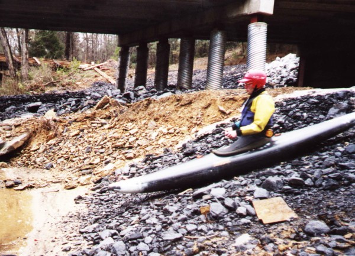

|  | To my knowledge, Davis is the only run with a coal slide for a put-in. |
| Dale Culpepper and Dave Curry on some Class II | |
| Murray and Kay Carroll in their new Caption |
| Murray and Kay on one of the bigger single drops | |
| Milking it for all it's worth | |
| "If only we had more water we could actually float over this old Dam". The whitewater is basically over by this point, but the run is not. This is an alternate access point if you can figure out how to get in here. |